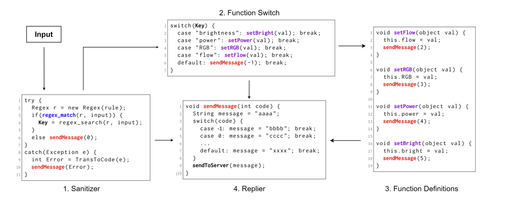
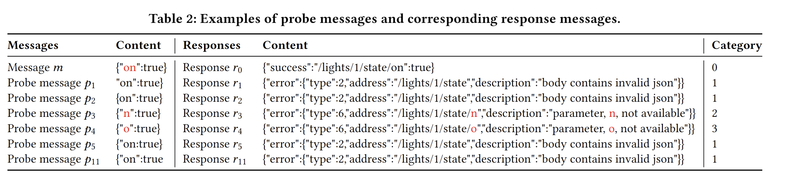
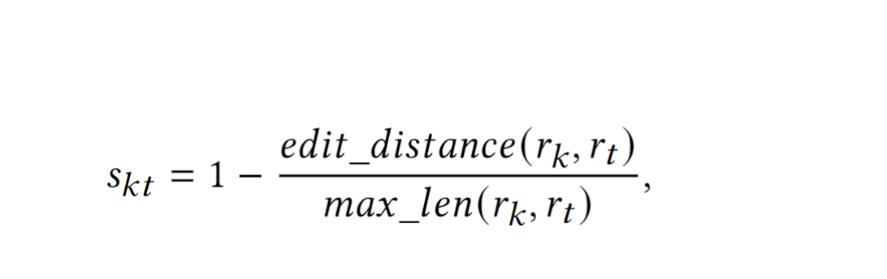
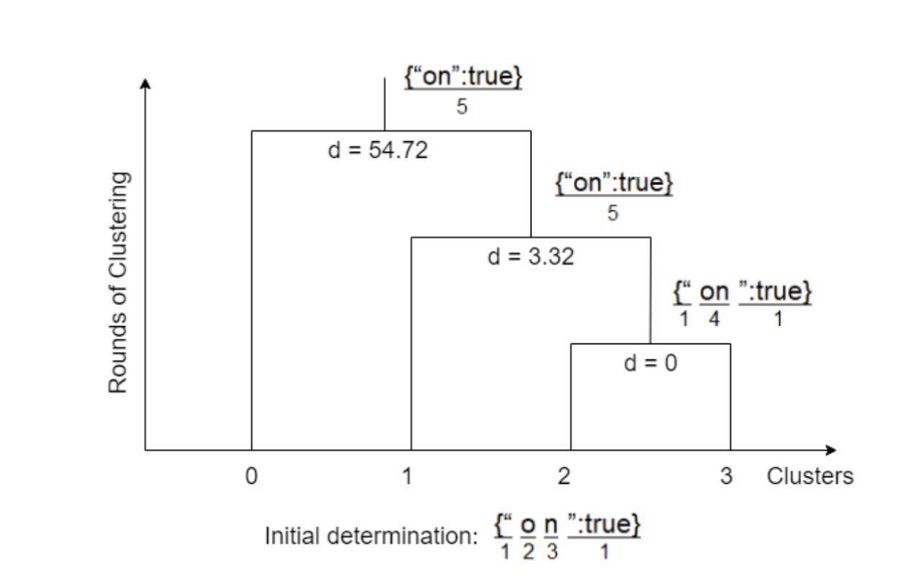
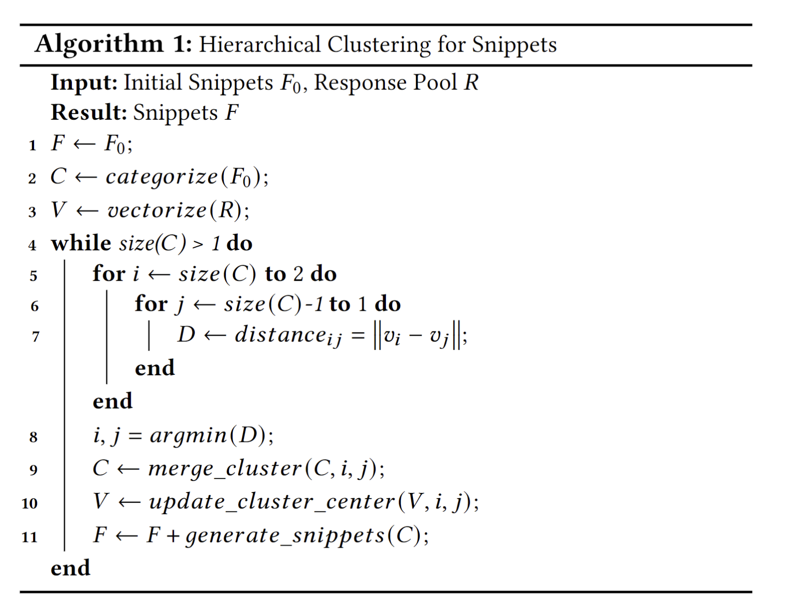

Snipuzz
Background
Iot 通用的通信架构
为了与设备外的输入进行交互，大多数物联网设备实现了类似的高级通信体系结构（如下图）。主要分为以下几个部分
- Sanitizer
接收外部的输入后对输入进行过滤（安全检查）、匹配（白名单检查）、解析（找出功能命令和执行内容），如果不满足任意一种情况，则会返回带有错误信息的响应结果（跳转到 Replier 处理），否则将匹配到的功能命令送入下一步。
- Function Switch
将 Sanitizer 中获取到的指令，进行功能(不单指函数)的匹配。如果成功匹配到对应的功能，则将通过 Sanitizer 中获取到的执行内容发送到下一步进行处理，否则返回带有错误信息的响应结果（跳转到 Replier 处理）。
- Function Definitions
此部分主要是对具体功能的实现，根据 Function Switch 选择调用的功能，对输入进行具体的执行，并将结果返回到响应信息中（跳转到 Replier 处理）
- Replier
具体实现了一个响应功能，统一处理在整个通信过程中的响应信息转换，最终反馈到输入设备中。

Implement
Response-Based Feedback Mechanism
基于响应的反馈机制，传统的黑盒 Fuzz 测试总是需要对 Binary 进行 Patch 实现反馈，或者像 AFL++ 利用 qemu 实现反馈。传统的黑盒 Fuzz 在对 Iot 设备测试时会遇到无法提取固件或者环境依赖过于庞大（例如像 Lina）使用 qemu 模式进行 Fuzz 的成本太大，Patch 固件更复杂的情况。此时传统的方法就不太适用于 Iot 设备上进行 Fuzz 测试。
Snipuzz 使用响应消息建立新的反馈机制。 Snipuzz 会收集每一个响应，当找到新的响应时，该响应对应的输入将作为种子排队，用于后续的变异测试
Message Snippet Inference
消息片段推断，传统的变异方法（字节翻转、字节添加、字节突变等）不太适用于 IOT 设备的 Fuzz 测试中。在 Iot 设备中，通常有较为严格输入规范，也会采用一些格式进行规范，例如 JSON、SOAP、键值对等，传统的变异方式可能会破坏这些格式规范，导致不能有效的提高路径覆盖率。
根据下表，如果我们逐字节地改变有效消息（即破坏格式），将得到许多不同的响应。 有效消息中两个不同位置的变异，如果收到相同的响应，则这两个位置很可能出自固件中的同一个功能中。 因此，可以将具有相同响应的那些连续字节合并为一个片段。同时也可以在片段中进行变异，这样可以极大的提高变异覆盖率。
Methodology
Message Sequence Acquisition
消息序列的获取，通过设备的 API 文档、或者对设备进行功能性的抓包获得，例如，可以在设备登陆后，开启抓包工具，用户与设备进行交互得到一些功能性的数据包。
Snippet Determination
核心思想
消息片段分类：利用启发式搜索和层次聚类的方式
Snipuzz 利用启发式算法和层次聚类方法来确定每条消息中的片段。消息片段的本质是消息中的连续字节，使固件能够执行特定的代码段。使用自动化的方式来识别消息中每个字节的含义。
使用启发式算法，对每一个 Request 粗略的划分初始片段。通过删除 Request Body 部分（测试中的 content）中的某个字节，生成一个新的消息，称为探测消息。对每个探测消息的响应进行归类，同时将初步划分的某个字节合并为同一种触发类型。

如图中，将相同响应结果的请求 message 划分为一种类型。
如何归类
本文使用了 Edit Dis-tance 编辑距离作为计算方式，计算出两个响应结果间的相似度，通过比较响应池中的每一个响应与当前目标响应的相似度，与曾经放入响应池时的相似度进行比较，分数低于时确定为不同响应则放入新的响应到响应池中，并记录此时的分数，否则进行下一轮比较，以此为归类方式。

其中 rk、rt 为两个响应，max_len 为最大长度计算公式
编辑距离代码
def EditDistanceRecursive(str1, str2):
edit = [[i + j for j in range(len(str2) + 1)] for i in range(len(str1) + 1)]
for i in range(1, len(str1) + 1):
for j in range(1, len(str2) + 1):
if str1[i - 1] == str2[j - 1]:
d = 0
else:
d = 1
edit[i][j] = min(edit[i - 1][j] + 1, edit[i][j - 1] + 1, edit[i - 1][j - 1] + d)
return edit[len(str1)][len(str2)]
相似度计算代码
def SimilarityScore(str1, str2):
ED = EditDistanceRecursive(str1, str2)
return round((1 - (ED / max(len(str1), len(str2)))) * 100, 2)
归类实现代码
response1 = m.ProbeSend(Seed, index) # send the probe message #######
time.sleep(1)
response2 = m.ProbeSend(Seed, index) # send the probe message twice
print(response1, end="")
if responsePool:
flag = True
for j in range(0, len(responsePool)):
target = responsePool[j]
score = similarityScore[j]
# c = 计算当前请求的响应与响应池中的每一个响应的相似度
c = SimilarityScore(target.strip(), response1.strip())
# 如果相似分数大于之前目标的分数则记录当前的index，并且继续循环
if c >= score:
flag = False
probeResponseIndex.append(j)
print(str(j) + " ", end="")
sys.stdout.flush()
break
# 如果当前相似度得分小于之前目标的分数，则把当前不同的响应结果放入响应池，同时记录分数
if flag:
# 放入响应池
responsePool.append(response1)
# 记录此时的相似度并添加到分数池中
similarityScore.append(
SimilarityScore(response1.strip(), response2.strip())
)
probeResponseIndex.append(j + 1)
# print(j + 1) # test only
Hierarchical Clustering
层次聚类，当出现当前响应池中响应的相似性分数为 1，当前目标响应与目标响应的相似性分数为 0.99 时，也满足上述的归类标准，会被放入到进程池中。但事实上这两种响是同一类响应，为了解决该问题，本文引入了层次聚类算法来细化消息片段。
层次聚类的核心思想是不断合并最相似的两个簇，直到只剩下一个簇。
层次聚类算法将数据集划分为一层一层的 clusters，后面一层生成的 clusters 基于前面一层的结果
本文采用欧氏距离作为样本间的距离
合并规则：簇间的距离最小时合并
合并停止条件：簇的个数为 1 时,停止合并
聚合聚类算法流程：
输入: n 个样本组成的样本集合及样本之间的距离
输 出 : 对样本集合的层次化聚类
- 计算 n 个样本中两两之间的欧氏距离
- 构造 n 个簇，每个簇只包含一个样本
- 合井簇间距离最小的两个簇，其中最短距离为簇间距离，构建一个新簇
- 计算新簇与当前各簇的距离。若簇的个数为 1，终止计算，否则回到步骤 3
欧式距离计算公式：
例如：输入向量[ [“{"”,1],[“o”, 2],[“n”, “3”],[“":true}”, 1] ]，通过 hierarchy.linkage(input_vec, method="average", metric="euclidean") 实现聚类，首先会将 字符 o 与字符 n 进行聚类（因为字符 o 与 n 的距离最近 ），得到了此时的簇为[ [“{"”,1],[“on”, 4],[“":true}”, 1] ],接着继续合并，最终得到一个簇，结果为 [“{"on":true}”, 5]
例图

算法伪代码

Mutation Schemes
突变的核心思想：以消息片段为基本单位，对消息片内部段进行 字节翻转、清空、数据类型及边界替换 、字典替换、消息重复 的操作。
片段变异代码
获取片段代码
# 检测片段边界，以及类型
def formSnippets(pi, cluster, index):
snippet = []
for i in range(index):
c1 = int(cluster[i][0]) #当前簇
c2 = int(cluster[i][1]) #当前簇
p = int(cluster[i][3]) #合并后新簇的样本个数
for j in range(len(pi)):
if pi[j] == c1 or pi[j] == c2:
pi[j] = p
i = 0
while i < len(pi) - 1:
j = i
# print("i="+str(i)) # test only
skip = True
while j <= len(pi) and skip:
j = j + 1
# print("j=" + str(j)) # test only
if pi[j] != pi[i]:
snippet.append([i, j - 1])
skip = False
if j == len(pi) - 1:
snippet.append([i, j])
skip = False
i = j
# print(pi) # test only
# print(snippet) # test only
return snippet
片段变异完整代码
def SnippetMutate(seed, restoreSeed):
# 初始化一个消息交互类
m = Messenger(restoreSeed)
循环所有的消息
for i in range(len(seed.M)):
# 响应池
pool = seed.PR[i]
# 响应对应表
poolIndex = seed.PI[i]
# 相似度分数表
similarityScores = seed.PS[i]
# 将响应与分数对应
featureList = []
for j in range(len(pool)):
featureList.append(getFeature(pool[j].strip(), similarityScores[j]))
# 初始化一个二维的panda的数据向量
df = pd.DataFrame(featureList)
# 层次聚类，UPGMA算法（非加权组平均）法，欧几里得距离
cluster = hierarchy.linkage(df, method="average", metric="euclidean")
# print("Cluster:")
# print(cluster)
# seed.display()
# 添加到簇列表
seed.ClusterList.append(cluster)
mutatedSnippet = []
for index in range(len(cluster)):
# 根据聚类得到的新簇（包含最终的字符）
snippetsList = formSnippets(poolIndex, cluster, index)
for snippet in snippetsList:
# 判断处理后的字符串是否在突变字符串中
if snippet not in mutatedSnippet:
mutatedSnippet.append(snippet)
tempMessage = seed.M[i].raw["Content"]
# ======== BitFlip ========
print("--BitFlip")
message = seed.M[i].raw["Content"]
asc = ""
for o in range(snippet[0], snippet[1]):
# print(255-ord(message[o]))
asc = asc + (chr(255 - ord(message[o])))
# message[o] = chr(255-ord(chr(message[o])))
message = message[: snippet[0]] + asc + message[snippet[1] + 1:]
seed.M[i].raw["Content"] = message
responseHandle(seed, m.SnippetMutationSend(seed, i))
seed.M[i].raw["Content"] = tempMessage
# ======== Empty ========
print("--Empty")
message = seed.M[i].raw["Content"]
message = message[: snippet[0]] + message[snippet[1] + 1:]
seed.M[i].raw["Content"] = message
responseHandle(seed, m.SnippetMutationSend(seed, i))
seed.M[i].raw["Content"] = tempMessage
# ======== Repeat ========
print("--Repeat")
message = seed.M[i].raw["Content"]
t = random.randint(2, 5)
message = (
message[: snippet[0]]
+ message[snippet[0]: snippet[1]] * t
+ message[snippet[1] + 1:]
)
seed.M[i].raw["Content"] = message
responseHandle(seed, m.SnippetMutationSend(seed, i))
seed.M[i].raw["Content"] = tempMessage
# ======== Interesting ========
print("--Interesting")
interestingString = ["on", "off", "True", "False", "0", "1"]
for t in interestingString:
message = seed.M[i].raw["Content"]
message = message[: snippet[0]] + t + message[snippet[1] + 1:]
seed.M[i].raw["Content"] = message
responseHandle(seed, m.SnippetMutationSend(seed, i))
seed.M[i].raw["Content"] = tempMessage
seed.Snippet.append(mutatedSnippet)
return 0
Summary
Snipuzz 通过启发式搜索、相似度计算、层次聚类的方式实现功能的广度覆盖，但仍然存在一定的不足， 没有对不同类型的协议进行针对性的处理，相似度计算法也不够优秀，变异方式过于单一等。